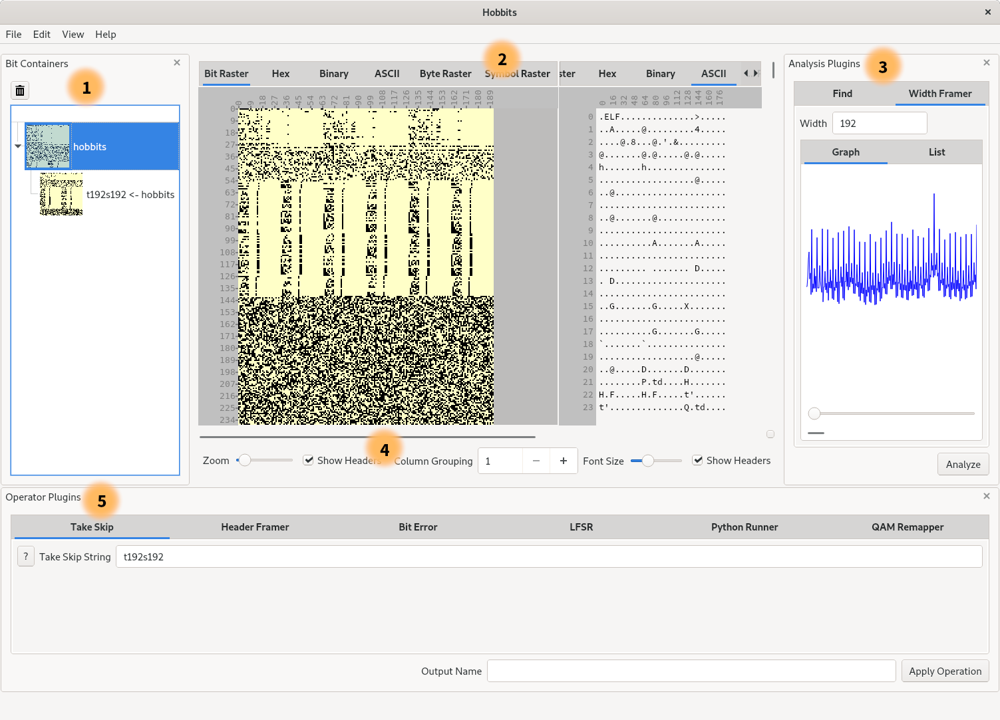

Using the Hobbits GUI
The Hobbits GUI is a powerful tool for manually evaluating data. It provides a fully integrated set of tools for preprocessing, analyzing, and displaying data in a variety of ways. This guide explains how to use the different features of the Hobbits GUI, and then presents a few example workflows.
Example Usage Video
GUI Layout

- Bit Container Selection Panel
- Displays
- Analyzer Panel
- Controls for the Displays
- Operator Panel
Preferences Menu
Navigating to Edit->Preferences... opens the preferences dialog where the
application configuration can be viewed and edited.
Bit Containers
Hobbits organizes imported data into "bit containers" that appear in a collapsible panel on the left side of the GUI by default. The panel's visibility can be toggled via:
- The top menu at
View->Bit Containers - The
Ctrl-Shift-Bhotkey - The
xat the top right corner of the panel (only for hiding)
Bit containers keep track of the data as well as metadata that can be extended, modified, and read by plugins. An important part of this metadata is the "frames" that the data is subdivided into. For example, when looking at time-division multiplexed data in a bit raster, it is useful to have each multiplexer frame on its own line so that constants, counters, and other patterns can be easily identified.
Plugins
Displays
One of the most prominent features of the GUI is the variety of displays that it provides for looking at data. Switching between displays is as simple as selecting the tab of the display that you want to use.
Your position in the data is preserved across displays, so you can navigate to a section of your data in one display, and then switch tabs to see what that section looks like in a different display.
Displays can also be split so that you can look at more than one display at the same time. Split views can be added or removed via:
- The top menu in
View->Split View - The
Ctrl-Shift-Vhotkey adds a view to the right - The
Ctrl-Shift-Xhotkey removes the rightmost view
Operators
Operators are displayed in a collapsible panel that appears at the bottom of the GUI by default. The panel's visibility can be toggled via:
- The top menu at
View->Operator Plugins - The
Ctrl-Shift-Ohotkey - The
xat the top right corner of the panel (only for hiding)
Operators can be used to modify, generate, combine, or separate data. A commonly
used operator is the Take Skip Operator, which allows you to quickly process
data with a simple filtering expression. For example, if you have data that is
uninteresting for the first 50 bits of every 256-bit frame, you can perform a
s50t206 to skip 50 bits and then take 206 bits for each frame so that you are
only left with the last 206 bits of each frame for further evaluation.
When an operator modifies data, the original data is still available to work with.
Analyzers
Analyzers appear in a collapsible panel on the right side of the GUI by default. The panel's visibility can be toggled via:
- The top menu at
View->Analyzer Plugins - The
Ctrl-Ahotkey - The
xat the top right corner of the panel (only for hiding)
Analyzers provide useful information about the data, and can add that information to the current bit container's metadata. For example, you can use the Width Framer to discover appropriate frame widths for data, and then apply one of those widths to the container. You can use the Find analyzer to find instances of bit/byte/ASCII sequences in data, and then highlight and quickly navigate to them.
Importer/Exporters
Importer/Exporters appear in the File->Import Bits From and
File->Export Bits To menus.
Importer/Exporters are the primary way to get bitstreams in and out of hobbits.
For example, if you want to open a file as bits, selecting the File Data
import plugin will let you select a file and then load it in as a Bit Container.
Batch Creation and Execution
Sequences of operator, analyzer, and importer actions can be saved as "batches"
that can be executed all at once. You can combine and connect these actions in
the Batch Editor by navigating to File->Open Batch Editor. Once you finish
editing, you can save the batch to a file from the Batch Editor's menu at
File->Save Batch As....
You can also create a batch by selecting either the container that starts an
action sequence or the container that ends the sequence and then navigating to
File->Save Batch.... This will prompt yout and then open the Batch Editor so
that you can verify and save the batch.
Saved batches can be executed via File->Apply Batch....
Command line execution
When running Hobbits from the command line, a variety of configuration and
data loading options are provided. Simply run it with the --help option to see
which options are available.
The hobbits-runner program can be used to apply a saved Hobbits batch to an input file without needing to open the GUI.
Plugin loading
A standard Hobbits distributable binary comes with a set of core plugins that should load without any user configuration. However, if you want to use a plugin that is not part of the core distribution, you can either:
- add it to the appropriate directory in the
pluginsfolder of the distribution folder or~/.local/share/hobbits/plugins - or, use the
--extra-plugin-pathcommand line option to specify a folder with non-core plugins in it (remember that a valid plugins folder has analyzers, displays, and operators in their own sub-folders, e.g.my-plugins/displays.) - or, specify your plugin path in your GUI config. In Linux, the config is an
ini file that can be found at
~/.config/Hobbits/Hobbits GUI.conf, and the plugin path configuration is thepathvariable in the[Plugins]section.
Get in touch
If you are having trouble using hobbits, or if you have a suggestion for hobbits or the documentation, please open an issue on the GitHub page or ask about it on the Discord channel